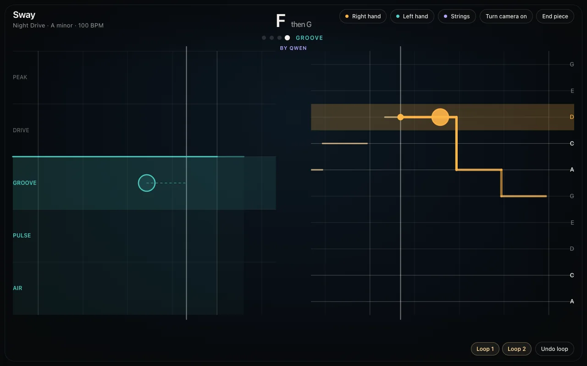

01Where it started
An instrument that keeps you in time
V1 was built for someone with no musical training. One hand plays a melody on a pitch ladder: pinch to play, and a higher hand plays a higher note. Quicker pinches make stronger notes, and leaning toward the camera swells a held note. The other hand sets the band's energy, cuts it, and loops what was played.
Every note lands in time and in key. The lead is synthesized in the browser, so no network request and no model sits between a gesture and its sound. Qwen writes the band's next four bars while the current four play, and MRT2 performs the harmony. The engine checks every plan, and a built-in band steps in whenever a model is late.

V1: a scripted performance, with MRT2 strings and a Qwen
band
0:32
V1 is stable. In a 20-minute run on October 14, MRT2 played the harmony in all but 3 of 484 bars. But two play tests found two different gaps:
| Play test | Finding |
|---|---|
| Oct 1 | The AI changed what the band played but not how it sounded, and the lead was a plain synthesizer. |
| Oct 4 | Playing feels like adding notes over an accompaniment, not like leading the music. Every session is the same Night Drive, and the right hand mostly changes pitch. |
The rest of this page is about the second gap.
02The problem
Motion as music, or motion to music
A generative theremin followed on October 5: the hands shaped MRT2's live sound directly, and it answered at once. Playing it made the problem exact. In the theremin, the hand chooses every note, and MRT2 only gives those notes a sound. In V1's band, fixed patterns and planned chords play whatever the hands do.
Motion as music instead of motion to music.
Two measures place every prototype:
- Influence: how much the music changes when only the movement changes.
- Freedom: how much the music changes when only the model's random choices change, with the same movement.
Influence of the hands →
Motion as music
Theremin, V1's lead
The hand plays every note.
Motion to music
The goal
The hands steer the direction; the model writes the
notes.
A backing track
V1's band
Fixed patterns for five energy levels.
A jukebox
September's ensemble
It generated freely, but a gesture took 8 to 14 s to change
the sound.
Freedom of the model →
So motion to music splits every musical decision:
Direction belongs to the hand
Register and contour, how busy the line is, intensity, harmonic tension, and when to build and when to rest.
Content belongs to the model
The exact notes and rhythms, the motive, and how it develops.
03Measurement
Measuring influence and freedom
MRT2's state can be copied, and a continuation with the same seed reproduces the same audio exactly. So two renders can start from one moment of music and differ in only one thing.
Listen: activity, in two designs
Each clip keeps three seconds from before the branch, so the movement starts at 0:03. Compare the first two clips in a row to hear influence, and the first and the third to hear freedom.
Theremin
a · moves a lot
b · moves little
a · moves a lot
Steered
a · moves a lot
b · moves little
a · moves a lot
In the theremin, the two seeds play almost the same notes: a note freedom of 0.06, where 0 is the same notes and 1 is none in common. In steered, the two seeds play different notes that move the same way: 0.43. The clips in each row share one level, so loudness differences are part of the result.
What MRT2 obeys
A design can steer only through handles that the model follows. Four were tested before the main measurement:
| Handle | Result |
|---|---|
| Silencing pitch classes | Obeyed. 94 to 99% of the notes' energy stays on the allowed scale, pentatonic scale, or triad. |
| Silencing octaves | Not obeyed. With a 12-semitone window placed high or low, only 11 to 55% stays inside it. |
| Register words in the style | Obeyed. "In a high register" places the music near MIDI 70 to 73, and "in a low register" near 50 to 51, in three of three seeds. |
| A calm style | Falls silent. "A slow lyrical melody of single long notes" fades within two seconds, so every style asks for an improvisation. |
Three designs, measured
Theremin lets height pick the note. Window lets height centre a window of notes that the model may play. Steered uses only handles that MRT2 follows: style words move the register and the energy, the allowed pitch classes open from the triad to the whole scale as the hands spread, and stillness silences the notes.
| Movement → attribute | Theremin | Window | Steered |
|---|---|---|---|
| Height → register | 83% · 2.2 · 0.12 s | 67% · 0.9 · 0.78 s | 83% · 1.4 · 1.23 s |
| Activity → density | 67% · 0.9 · 0.12 s | 67% · 1.4 · 2.83 s | 100% · 1.9 · 2.33 s |
| Spread → tension | No reliable effect | No reliable effect | 100% · 2.6 · 1.68 s |
| Stillness → quiet | No reliable effect | 83% · 1.9 · 2.93 s | 100% · 1.9 · 1.83 s |
| Note freedom | 0.06 to 0.35 | 0.46 to 0.55 | 0.43 to 0.66 |
Each cell gives the share of six seeds that moved the expected way, the effect in units of the seeds' spread, and the time to half the change. "No reliable effect" means 50% or less, or an effect under 0.5. Scripted movements, offline renders, October 7.
- Steered is the first design in the goal's corner. Every movement moved its attribute the expected way in at least five of six seeds, and the model chose different notes in every seed.
- The hand and the model share the music. In steered, a movement's effect is about as large as the difference between two seeds: the hand's share of the variation is 0.49 to 0.58.
- Window fails, as the handles predicted. Height moved the register in only four of six seeds.
- Steered is slow. Half of each change takes 1.2 to 2.3 s, against 0.12 s for the theremin. With all smoothing removed, MRT2 still took 1.2 to 1.7 s to follow, because it finishes what it is playing. This latency was accepted: a change that builds up reads as an orchestra following its conductor.
Listening test
An audio measure is not what a listener hears. In a blind test, the listener heard two clips from the same moment and seed, and picked the one that matched a described movement.
20/24All pairs · chance ≈ 1 in 1,300
12/12Activity and stillness
5/6Height
3/6Spread · at chance
Spread was steered's strongest measured movement, but the question "the hands spread wide" did not point listeners to it. Asked instead which clip sounds more tense, the same listener picked the wide clip in 9 of 12 pairs. The change is audible, but nothing about spreading the hands suggests it.
On October 14, after playing the steered page with the camera, the verdict was that it does feel like leading the music: the first answer to October 4.
04Continuity
One continuous piece: the spine
The steered page led the music, but it did not flow.
It feels like some random music pieces joined together.
V2's first milestone gives the music a spine that keeps going whatever the hands do:
- Bars and chords: a bar grid at 100 beats a minute, and the chords Am, F, C, and G, one a bar.
- The harmony opens around each chord: close hands keep the melody on the chord's tones, wider hands add the pentatonic scale, then the whole scale.
- Changes land on bar lines, not on any frame.
- Stillness thins the music and never stops it: the level falls to about a third at once, and from the next chord only its root and fifth may sound.
- A silence guard: when MRT2 falls silent by itself for 0.8 s, the spine strikes the chord being heard.
Telling each chord early
MRT2 follows a new chord late. With chords told on their bar lines, only 26% of the melody's energy was on the bar's chord early in the bar. Six seeds were tried with the harmony told ahead:
Table
| Told ahead of the bar line | Early in the bar | Late in the bar |
|---|---|---|
| On the bar line | 26% | 55% |
| 0.8 s | 48% | 74% |
| 1.2 s | 60% | 98% |
| 1.6 s | 82% | 48% |
Listen: without and with the spine
The same 40-second scripted performance: it steers, rests twice, and starts again.
Without the spine
0:40
With the spine
0:40
Over six seeds, the clips without the spine were silent 18% of the time, and those with it 1%. In a blind test, the spine was chosen as the more continuous clip in six of six pairs, which happens by chance once in 64 tries. The clips without the spine fall silent when the hands rest, an obvious cue, so this shows that the largest seam is gone, not yet that the music feels like one piece.
Texture
Played, the spine still sounded like individual piano fragments. The controller was not the cause; the model was. With the hands held constant and no chord changes at all, solo piano's note rate still varied 27% from second to second. An ensemble varies less.
Solo piano
0:30
Piano, strings, and bass
0:30
Hands held constant, chords on; each clip is brought to the same loudness. The plain ensemble lost the energy control, so the spine's styles now name instruments: cellos, double bass, and low piano for low; violins and high piano for high; fast arpeggios and pulsing staccato strings for lively. Height then moved the register with an effect of 3.7, and activity moved the density with 3.8, in six of six seeds.
This is GREAT!!!
05V2
The conductor, and what it lost
V2's goal: anyone can lead one continuous, evolving piece of music in five minutes, without playing a note. Its picture is an orchestra you conduct with your hands. An AI composes and plays a live score, and the gestures decide how it is played. The question "notes or no notes" has a middle:
| Level | The player decides | The model decides | Example |
|---|---|---|---|
| Note | Every pitch and its timing | Only the sound | V1's lead, the theremin |
| Intent | A direction, a moment, a choice | Every note | V2 |
| Direction | Higher, livelier, tenser, rest | Everything else | The steered page |
A conductor works at the level of intent. The conductor page, built on October 19 and 20, gives each gesture one fixed meaning in a film-score world in D minor:
| Gesture | What the music does |
|---|---|
| The right hand's motion, bigger or smaller | Louder or softer at once; fuller or thinner within a second or two |
| The right hand's motion, faster or slower | Driving and rhythmic, or calm and sustained |
| The left hand's place, left to right | The violins, the brass, or the cellos and basses lead |
| The left hand's height | How far that voice comes forward |
| An open palm, or a pinch | Long lines, or short notes |
| A fist, or holding still | After about 0.65 s, a hush to a quiet chord |
| Both hands up, then down | A swell while they are up; the next section lands on the beat after the drop |
Qwen writes the score a phrase ahead. It hears how the last phrase was conducted, in words and numbers only, and the world's own plan plays whenever its answer is late.
Three play tests
| Date | Version | What was said |
|---|---|---|
| Oct 19 | A film score, Qwen as the arranger, and a clap | "It has that film-score sound." But: "I don't know what my hands are actually controlling." |
| Oct 20 | The conductor | It starts to come together: "the instrument itself is a generative result." |
| Oct 20 | The conductor, with drawn gestures and a louder level | "I completely don't get it." The music went "back to being isolated musical snippets without any real subjectivity or consistency." |
Against the spine, the conductor removed what held the music together and weakened the hands. The composer wrote new chords for each phrase, and every change of voice or section was a new start for MRT2. Over six seeds, the spine's height moved the register with an effect of 3.7, and the conductor's left hand with 1.3. The spine's activity moved the density with 3.8, and the conductor's motion with 1.5.
Underneath both, nothing in Sway held a theme. MRT2's effective receptive field is about 20 s, and nothing it is given names a melody.
The conductor is in review as Audiofool934/sway#17.
06Identity
A theme that returns
The theme test gives the spine a melody, and asks whether the music then sounds like one piece with its own identity.
- The theme is four bars over Am, F, C, and G.
- MRT2 is given it as notes. Each note is struck on its first frame and then held. From middle C up, every other pitch is silenced, so the theme is the top line. Below middle C the harmony stays free, and MRT2 accompanies.
- It leaves and returns: the theme for four bars, eight bars away, the theme, four bars away, and the theme.
MRT2 answers a struck note within about 0.1 s. A chord, by contrast, has to be told 1.2 s ahead.
Table
| Seed | With the theme | Without it | Later in the note, with / without |
|---|---|---|---|
| 100 | 90% | 12% | 42% / 15% |
| 101 | 89% | 21% | 51% / 14% |
| 102 | 88% | 12% | 58% / 15% |
| 103 | 82% | 22% | 48% / 18% |
| 104 | 86% | 18% | 38% / 17% |
| 105 | 81% | 27% | 21% / 19% |
The same 24 bars and the same movement, with and without the theme. Both clips are brought to the same loudness.
Without the theme
0:58
With the theme
0:58
Comparing the pairs blind proved tiring, so the test has no listening result yet, and the theme became playable instead. On the steered page it returns for four bars every twelve, and the hand's height still moves it an octave up or down.
When the theme returns, it clearly switches, but overall it is stronger than before.
The theme is in review as Audiofool934/sway#19. The work in progress eases into and out of the theme over a bar.
07System
How it runs
Everything except the composer runs on one Apple Silicon Mac. Models stay off the immediate path: what answers a gesture at once is made in the browser.
The browser
Chrome · the camera stays here
- The camera image, mirrored behind the stage
- MediaPipe finds each hand's landmarks
- Gestures become a few controls
- The volume and the swell answer at once
- The streamed audio plays
The server
Python and MLX · loopback only
- The spine: bars, chords told 1.2 s early, the theme
- MRT2 renders each 40 ms frame in about 22 ms
- A GPU filler keeps the clock up between frames
- Leveling to a steady loudness
The composer
Qwen · cloud · a phrase ahead
- The next section, its chords, and a caption
- Never sees the camera
- A built-in plan plays when it is late
A live stream renders one 40 ms frame at a time, so the GPU idles for about half of each frame. After about 25 seconds of that, macOS lowers the GPU clock until a frame takes about 42 ms, and the stream falls behind. Between frames, the server now runs small matrix products until 4 ms before the next frame, and frames take a median of 22 ms.
08Next
What comes next
- The theme, played by hand, with smoother seams where it enters and leaves.
- The world designer: a language model writes a world from the player's words, such as "a rainy noir chase through Tokyo": its key, tempo, chords, three voices, and sections. The gestures keep their meaning in every world, and each world is checked by ear and by measurement before play.
- Keeping a phrase, which the composer brings back later, varied.
- New players, in a five-minute test.
The five-minute test is the bar for V2. A first-time player, with only the start screen, within five minutes:
- says they led the music;
- can say what each hand controls;
- can point to a moment they caused;
- hears one piece, not pieces joined together;
- wants to play again.
Open questions
- Can players control the size and the speed of their motion separately?
- Can every world have three voices that MRT2 plays distinctly enough to point at?
- Does keeping a phrase feel like leading, or like curating?
- Can a kept phrase become notes reliably enough to vary, when dense textures confuse the note finder?
09Log
Timeline
- First prototype: camera to Qwen to MRT2 text prompts.
- Paused. A gesture took 8 to 14 seconds to change the sound.
- Restarted as V1: a hand-played lead, a band hand, and lessons.
- V1 merged; the first play test.
- Second play test: stable, but it does not feel like leading the music.
- The generative theremin.
- Motion as music versus motion to music; the first steering measurements.
- Listening test: 20 of 24 right. The steering latency is accepted.
- The steered page feels like leading the music.
- V1 called OK; V2's design begins.
- The spine wins six of six blind pairs; the ensemble spine plays as one piece.
- A film score with an arranger, then the conductor.
- The conductor's play tests, the silence guard, and the theme, tested and then played.
10Context
Related work and credits
| Work | What Sway learns from it |
|---|---|
| Max Mathews' Radio Baton | Conducting tempo and dynamics alone already feels like leading. |
| Magenta's Piano Genie | A model can turn a rough contour into good notes. |
| Google's Blob Opera | Few controls, an instant reward, and a model that does the harmony. |
| François Pachet's Continuator, Magenta's AI Duet | A model that answers in the player's style feels collaborative. |
Sway tries to combine conducting, a composer that listens, and worlds designed from the player's words.
Models
- Magenta RealTime 2 (Google) writes the music. Its weights are distributed under CC BY 4.0; Sway's adapter adapts Apache 2.0 code from the Magenta RealTime project.
- Qwen (Alibaba Cloud) composes, through its hosted API.
- MediaPipe Hand Landmarker (Google) tracks the hands in the browser.
Every clip on this page comes from a scripted performance, not from hands. The V1 clip also has the browser's synthesized lead and drums; every other clip is MRT2 alone. Sway uses the models without changing their weights. See the third-party notices. No license for original Sway code has been selected.